Levi's®
NORAGI LIMITED COLLECTION
501® INTERPRETATIONS
STYLE LOOK BOOK
DENIM FIT GUIDE
PRODUCTS
facebook
這個頁面上的內容需要較新版本的 Adobe Flash Player。
NORAGI LIMITED COLLECTION
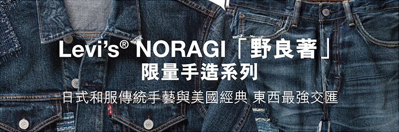 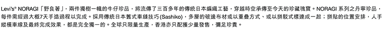
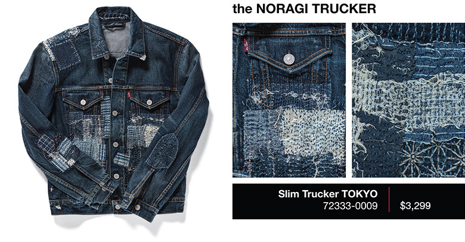
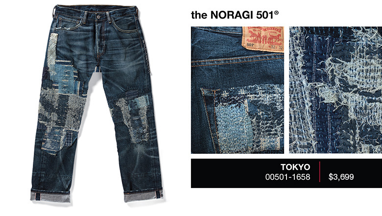
501® INTERPREATIONS
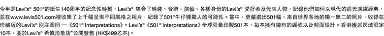
STYLELOOK BOOK
DENIM FIT GUIDE
PRODUCTS
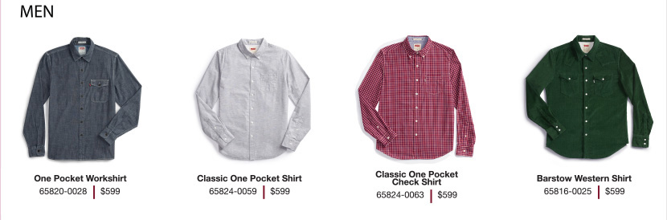 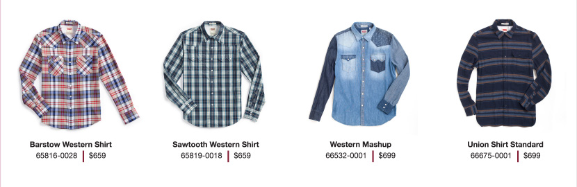 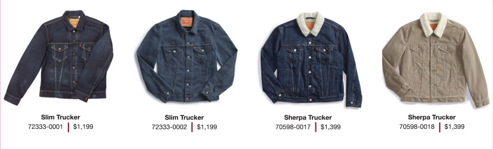 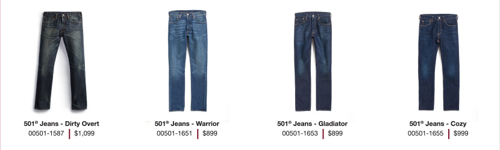 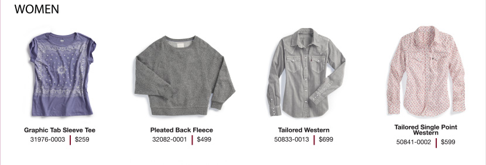 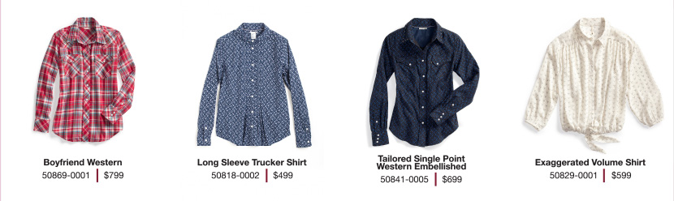 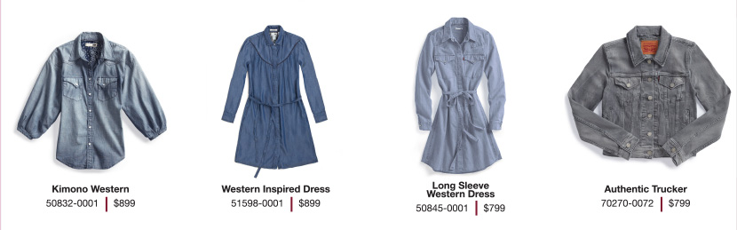 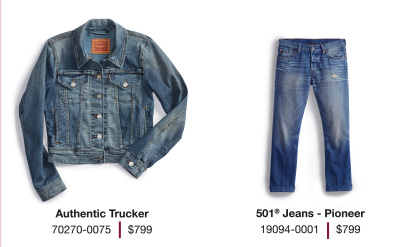